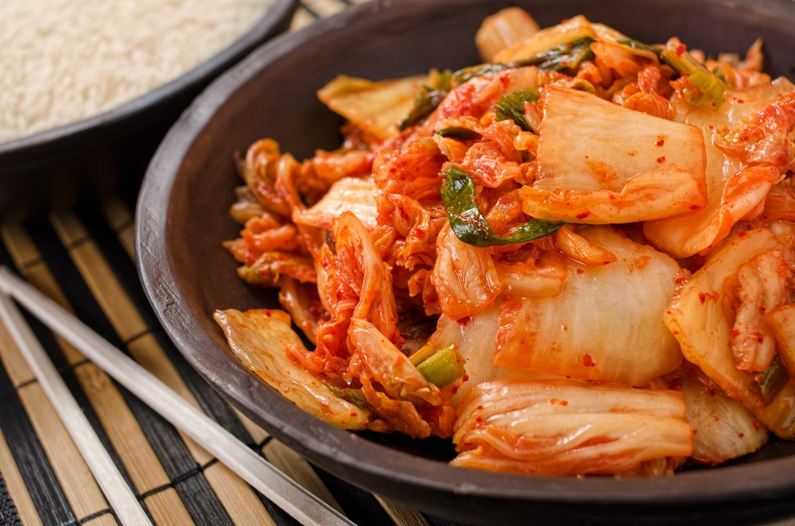

El Kimchi es un plato coreano hecho a base de preparación fermentada que tiene como ingrediente basico la col asiática o repollo Brassica pekinensis, también existen otras recetas en las que utilizan otros tipos de vegetales, que son acompañados de pimiento o chile rojo molido, ajos cebollas u otras combinaciones de acuerdo a diferentes zonas geográficas de Corea. Está presente en el día a día en la mesa de los coreanos.
Tiene un olor fuerte y característico, su sabor es salado y picante, puede servirse directamente como banchan, o ingrediente en guisos y sopas, teniendo un papel fundamental en la gastronomía Coreana. Muy importante: se puede consumir el mismo día, pero lo ideal es dejarlo fermentar durante ocho días, como minimo, para que tome el sabor adecuado.

A continuación veremos que necesitamos para preparar el Kimchi
2 repollos
25gr. de harina de arroz
50gr. de ajos
20gr. de azúcar morena
50gr. de salsa de pescado
3 cucharadas soperas de pasta de soja
1 cucharadita de semillas de sésamo (opcional)
50 gr. de jengibre
Pimentón y sal
Modo de preparación
Lavar y cortar las hojas de repollo en trozos grandes, incluyendo al tallo
Poner 2 litros de agua en un recipiente, echarle 200 gr. de sak gruesa, mezclar y meter los pedazos de repollo. Dejarla reposar por 12 horas.
En un bowl, mezclar el jengibre y el ajo hasta que se forme una mezcla homogénea.
Agarrar un bowl y poner la harina, mezclarla con pimentón y agregar un poquito de agua (fría), mientras se revuelve despacio. Por úlrimo, agregar el ajo y la pasta de jengibre.
Agregar la pasta de soja, 4 cucharadas soperas de salsa de pescado y el azúcar. Opcional: agregarle semillas de sésamo.
Enjuagar bien el repollo y agregarlo a toda la mezcla.
Guardar toda esta preparación en la heladera hasta que fermente.
Recomendación: consumirlo recién a los ocho días, como mínimo, para que consiga el sabor salado y picante del kimchi.
También pueden usar este video como guia para prepararlo.